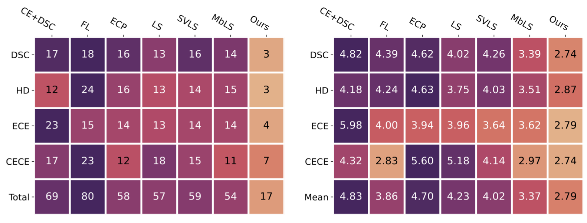
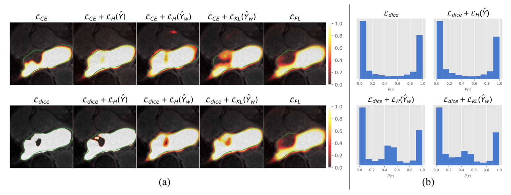
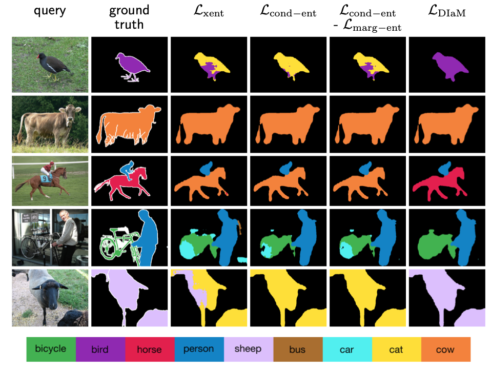
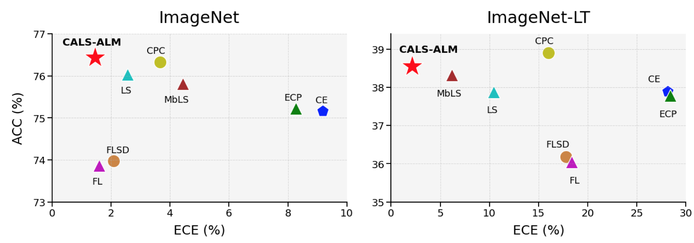
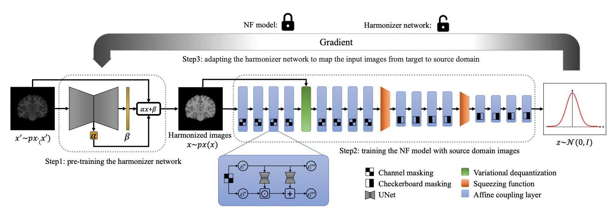
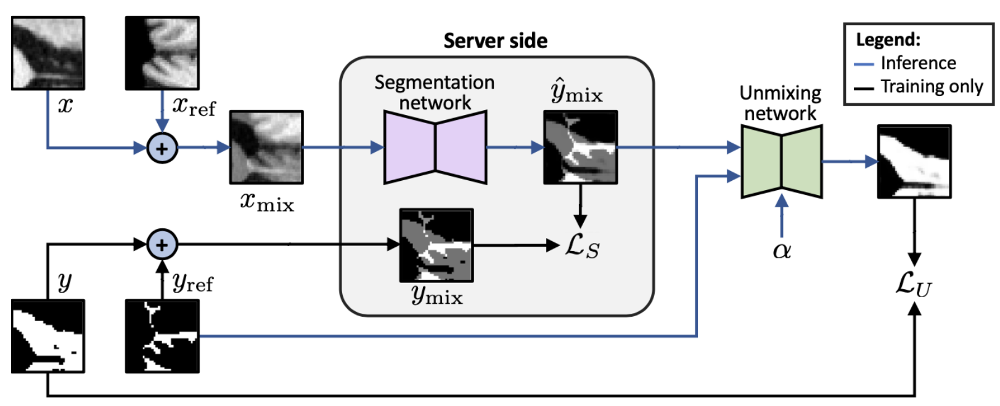
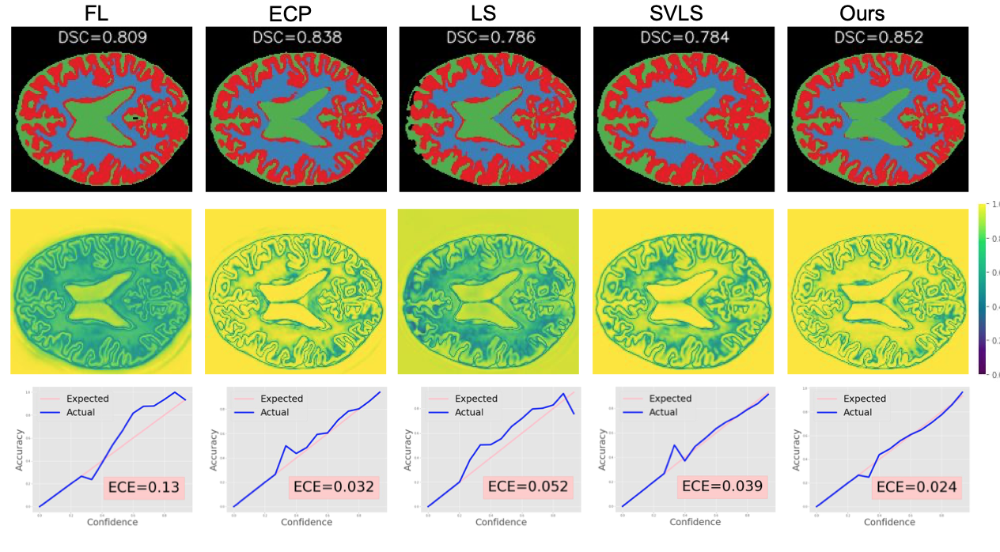
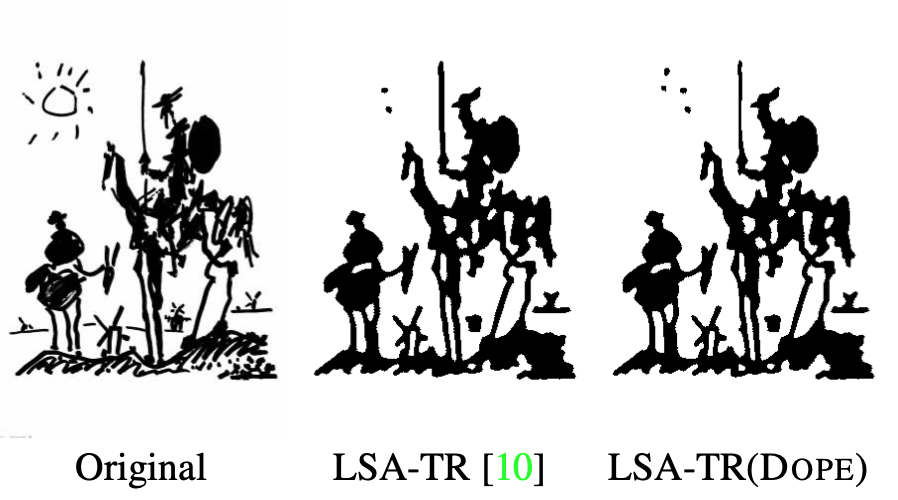

Su Yang
Ph.D student |
|
Short-Bio
I am a graduate student in the Department of Applied Bioengineering at Seoul National University, South Korea. Prior to being a graduate student, I was a research engineer at Asan Convergence Science and Technology, Asan Medical Center, South Korea. I obtained my B.Sc and M.Sc in the Keimyung University , South Korea, in 2016 and 2018. My current research focuses on deep learning, image processing, and medical image analysis in engineering fields and CBCT, MDCT, panoramic radiographs, 3D face and intraoral scans, IVOCT, MRI, and PET/CT in medical imaging fields.
News
[02/2021] My home page is opened at Jan 2023!.
Selected Publications (* Co-first auhtor; † indicates corresponding authorship)

|
QCBCT-NET for direct measurement of bone mineral density from quantitative cone-beam CT: a human skull phantom study. Tae-Hoon Yong*, Su Yang*, Sang-Jeong Lee, Chansoo Park, Jo-Eun Kim, Kyung-Hoe Huh, Sam-Sun Lee, Min-Suk Heo & Won-Jin Yi Scientific Reports 2023. [PDF] |
|  | Trust your neighbours: Penalty-based constraints for model calibration. Balamurali Murugesan, Sukesh Adiga V, Bingyuan Liu, Hervé Lombaert, Ismail Ben Ayed, Jose Dolz MICCAI 2023. |
|  | Maximum Entropy on Erroneous Predictions (MEEP): Improving model calibration for medical image segmentation. Agostina Larrazabal, Cesar Martinez,Jose Dolz*, Enzo Ferrante* MICCAI 2023. [PDF] |
|  | A Strong Baseline for Generalized Few-Shot Semantic Segmentation. Sina Hajimiri, Malik Boudiaf, Ismail Ben Ayed, Jose Dolz CVPR 2023. |
|  |
Bingyuan Liu, Jerome Rony, Adrian Galdran, Jose Dolz, Ismail Ben Ayed CVPR 2023. |
|  |
Farzad Beizaee, Christian Desrosiers, Gregory A Lodygensky, Jose Dolz IPMI 2023, Oral Presentation. |
|  |
Bach Ngoc Kim, Jose Dolz, Pierre-Marc Jodoin, Christian Desrosiers IPMI 2023, Oral Presentation. |
|  |
Balamurali Murugesan, Bingyuan Liu, Adrian Galdran, Ismail Ben Ayed, Jose Dolz MedIA 2023. |
|  |
Jose Dolz, Ismail Ben Ayed, Christian Desrosiers CVPR 2017. |
Selected Awards
Academic Services
© Jose Dolz | Last updated: March 2023